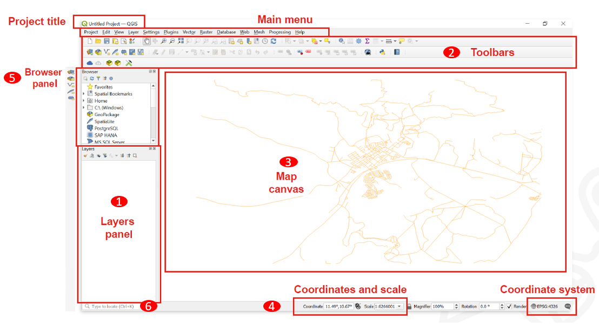
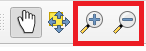

QGIS Interface#
Overview of QGIS Interface#

Layers List / Browser Panel: The layers list shows all layers/files that are loaded in the project. You can show/hide layers and set other properties.
Toolsbars: Toolbars are shortcuts to execute frequently used commands. For example, there are special toolbars for vector and raster files, but also general ones for saving your project, etc. The toolbar contains, among other things, a list of all the commands you can use. The toolbar also contains the toolbox, which is used later in many of the wiki videos.

Map View: The map view is the central component of every GIS programme. This is where the geodata is displayed. The map view has a projection which does not always have to correspond to the projection of the layers.
Status bar: In the status bar you will find central information about the current map view. Here you can set the projection of the map view and the scale. You can read the coordinates of the mouse pointer and thus quickly find out the coordinates of points on the map. You can rotate your map view, e.g. if you want to create a map facing south.
Side Toolbar. You may see a side toolbar. This is another way to easily open vector and raster files in QGIS.
Locator bar. Here you can search for tools and layers. If you don’t know where to find a tool, you can try here.
Official QGIS Documentation: An Overview of the Interface
Buttens and Shortcuts#
Navigation in the map view#
Name |
Menu option |
Shortcut |
Description |
|---|---|---|---|
Map pan |
|
‘Space’, ‘Page Up’, ‘Page Down’ or the ‘Arrow Keys’ |
Move the map |
Pan map to selection |
Pans the map to the selected element |
||
Zoom in |
‘Ctrl+Alt++’ or mouse wheel |
Zoom into the map |
|
Zoom out |
‘Ctrl+Alt+-’ or mouse wheel |
Zoom out of the map |
|
Zoom full |
‘Ctrl+Shift+F’ |
Zoom to the selected element |
|
Zoom to selection |
‘Ctrl+J’ |
Zoom to the selected element |
|
Zoom to layer |
|
Zoom to the selected layer |
|
Zoom to native resolution |
Zoom to the native resolution (100%) |
||
Zoom last |
|
Zoom to the last zoom |
|
Zoom next |
|
Zoom to the next zoom |


Project management#
Name |
Menu option |
Shortcut |
Description |
|---|---|---|---|
New project |
‘Ctrl’ + ‘N’ |
Create a new project |
|
Open project |
|
‘Ctrl’ + ‘O’ |
Open an existing project |
Save |
|
‘Ctrl’ + ‘S’ |
Save the project |
Save as… |
|
‘Ctrl’ + ‘Shift’ + ‘S’ |
Save the project as… |
Properties |
‘Ctrl’ + ‘Shift’ + ‘P’ |
Open the project properties |
|
New print layout |
|
‘Ctrl’ + ‘P’ |
Opens the Dialog to create a new print layout |
Search |
‘Ctrl’ + ‘K’ |
Opens the search bar |


Layer management#
Name |
Menu option |
Shortcut |
Description |
|---|---|---|---|
Data source manager |
|
‘Ctrl’ + ‘L’ |
Add a new layer |
New GeoPackage layer |
‘Ctrl’ + ‘Shift’ + ‘N’ |
Add a new GeoPackage Layer |
|
Add vector layer |
|
‘Ctrl’ + ‘Shift’ + ‘V’ |
Add a new vector layer |
Add raster layer |
‘Ctrl’ + ‘Shift’ + ‘R’ |
Add a new raster layer |
|
Remove selected layer |
|
‘Ctrl’ + ‘D’ |
Remove the selected layer |
Toggle layers view |
‘Ctrl’ + ‘1’ |
Toggle the layers view |
|
Toggle browser view |
‘Ctrl’ + ‘2’ |
Toggle the browser view |


Analysis Tools#
Name |
Menu option |
Shortcut |
Description |
|---|---|---|---|
Identify features |
‘Ctrl’ + ‘Shift’ + ‘I’ |
Identify features on the map view by clicking on them |
|
Select feature |
|
Select a feature by area or single click |
|
Select feature by value |
|
‘F3’ |
Select features by value |
Open attribute table |
|
‘F6’ |
Open the attribute table |
Open attribute table with selected features only |
|
‘Shift’ + ‘F6’ |
Open the attribute table with selected features only |
Open attribute table with visible features only |
|
‘Ctrl’ + ‘F6’ |
Open the attribute table with visible features only |


Advanced Tools#
Name |
Menu option |
Shortcut |
Description |
|---|---|---|---|
Processing toolbox |
|
‘Ctrl’ + ‘Alt’ + ‘T’ |
Opens the processing toolbox |
Python console |
‘Ctrl’ + ‘Alt’ + ‘P’ |
Opens the Python console |

Moving an orientation on the Map Canvas#
Moving the map view#
To move on the map canvas with your mouse cursor you need to toggle the hand button.

You can also move on the map canvas with arrow keys on your keyboard.
Zooming in the map view#
The easiest way to zoom on Map Canvas is by scrolling.
Or with the hotkeys Ctrl++ and Ctrl+-

Another way is to use the zoom buttons in the toolbox panel.
The Processing Toolbox#
All the functionality, tools and applications of QGIS are organised in the Processing toolbox. If you ever need to find a tool, or an algorithm, you can open the toolbox and use the search function to find it.
Open Toolbox#
To open the Toolbox in QGIS click on the gearwheel button. Or click on Processing -> Toolbox
You can use the search bar to find specific tools.
Toolbars#
Some Tools have their own toolbars which you can add to your QGIS interface. They appear above the map canvas as icons which let you quickly access specific functionalities. To avoid an overcrowded interface it is smart to only activate specific toolbars or panels only when you really need them.
Show and hide displays and toolbars#
To add or remove toolbars from your interface click on View -> Toolbars -> Check or uncheck the toolboxes you want to add or remove
To add or remove panels from your interface click on View -> Panels -> Check or uncheck the panels you want to add or remove
Move and arrange toolbars#
At each toolbar there is a field of two dotted lines. If you move the mouse pointer over it until an arrow cross appears and then hold down the left mouse button, you can move the toolbar. This allows an individualised arrangement of your own tools. By compressing all toolbars into a few lines, the map view window can also be enlarged.
Save & Open QGIS Projects#
To save progress or to open an existing project in QGIS is very similar to programs like MS Word. However, there is one BIG difference. In QGIS the geodata you work with is not saved in your QGIS project file. Instead, the project file only contains the file paths where the geodata were located at the time the project was last saved on the PC. If the location of this geodata is subsequently changed, the error message “handle unavailable layers” will appear when the project is opened again.
Open Projects#
To open an existing QGIS project click on Project -> Open… -> Navigate to your project and open it.
Save Projects#
When you save the first time: To save the QGIS project you are working on click on
Project->Save as…-> Navigate to the folder where you want to save the project -> Give the project a name ->SaveWhen you save progress: To save progress in a project that was already saved somewhere on your computer there are two good options:
Use the hotkey
Ctrl+son your keyboard.Click on
Project->Save.